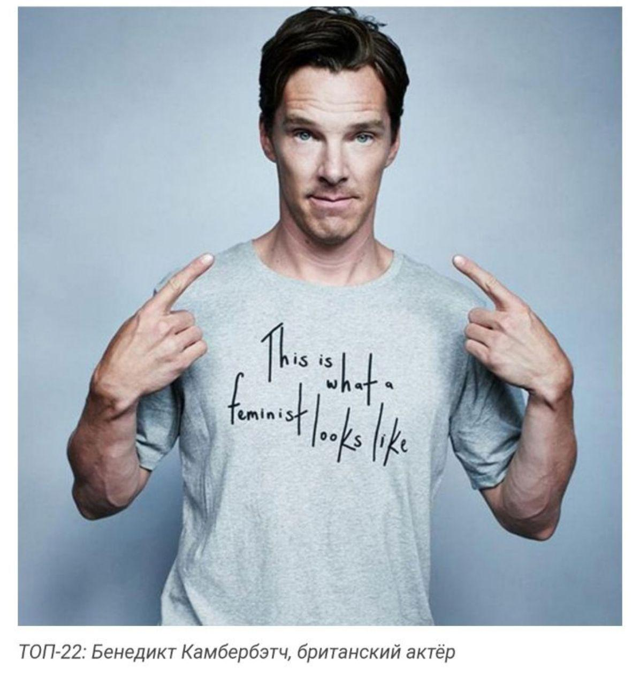

Март
Март - первый весенний месяц, теплый(если не выпадет снег), солнечный и
приносит солнечное настроение в лицее! Когда рассказываешь про март, просто нельзя не упомянуть
про 8-е марта в лицее !
«8 марта 1857 года в Нью-Йорке прошла манифестация работниц швейных и обувных фабрик. Они добивались 10-часового рабочего дня, требовали сухих и светлых помещений и зарплату наравне с мужчинами. До этого женщины работали по 16 часов в сутки и получали копейки. Протест принес свои плоды: был создан профсоюз, членами которого стали женщины.
А уже в 1908 году в этот же день женщины добивались запрета детского труда, улучшения условий работы и требовали для себя права голоса.
В 1910 году Клара Цеткин, выступая на Международной конференции женщин в Копенгагене, предложила праздновать Международный женский день 8 марта. Женщины мира восприняли это как призыв к борьбе за равноправие. В 1911 году праздник начали отмечать в Дании, Германии, Швейцарии и Австрии.
В СССР 8 марта стало официальным праздником. Но назывался он сначала «день смотра боевых сил работниц и крестьянок всей страны».
Выходным днем 8 марта сделали в 1965 году, а международным праздник стал в 1977-м. ООН приняла резолюцию с призывом ко всем странам провозгласить 8 марта днем борьбы за права женщин.»

8-е марта в лицее это теплые и забавные выступления всех классов, которые
сопрововождаются теплой и уютной атмосферой: